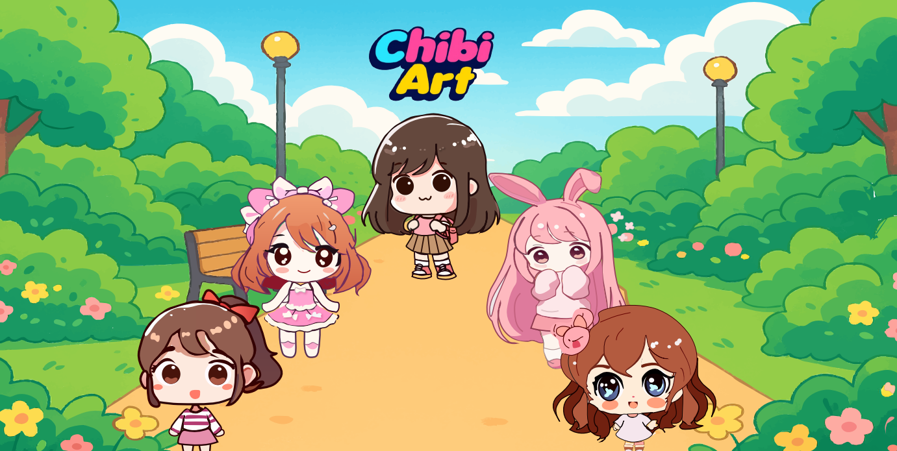

Illu
🎨 Illustration
Vector
Chibi Art Illustration
Cute character set with soft shading and playful palette — made in Adobe Illustrator with careful vector detail.
A curated selection of illustration and UI projects — playful, calm, and intentionally crafted.
Cute character set with soft shading and playful palette — made in Adobe Illustrator with careful vector detail.
This digital banner was created to promote Travellly, a fictional travel company offering customized travel packages. visuals.

Cohesive 9-post layout for a travel brand — color harmony and composition optimized for feeds.
.png)
A modern, dark-themed UI for showcasing work — emphasis on imagery and a calm browsing rhythm.
A visually futuristic showcase of my creative workflow, illustrating how design and technology merge seamlessly from concept to final execution.
A feminine, user-centered e-commerce design created in Visily, combining fashion elegance with seamless shopping flow for a modern online experience.
Cute character set with soft shading and playful palette — made in Adobe Illustrator with careful vector detail.